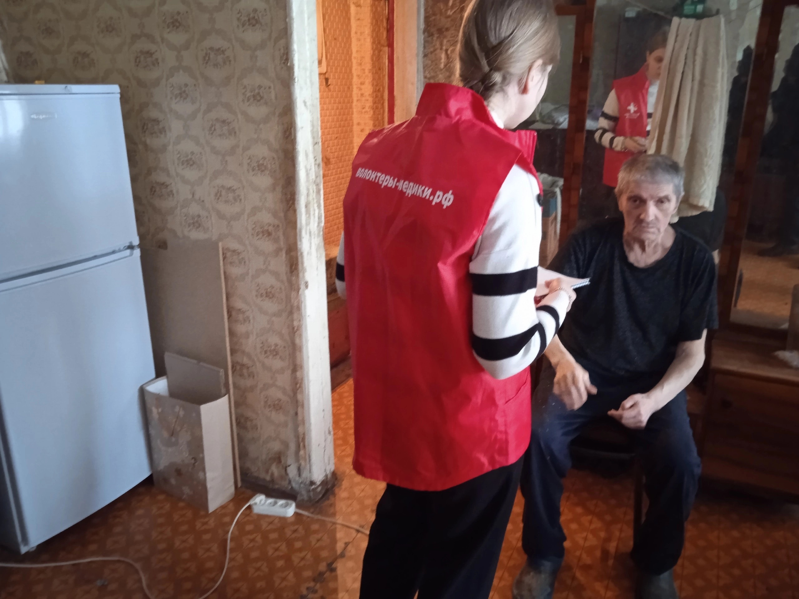
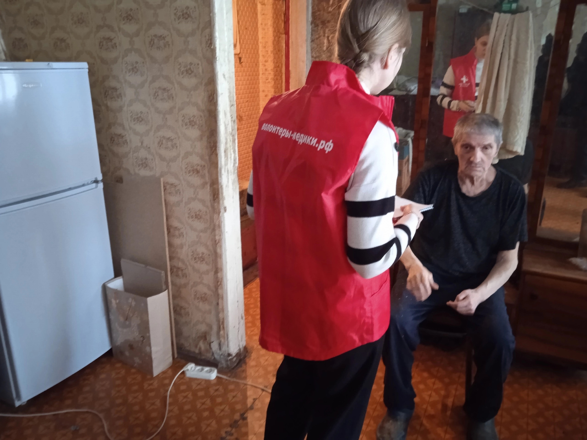
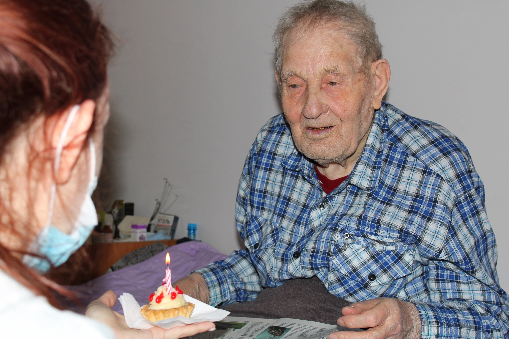
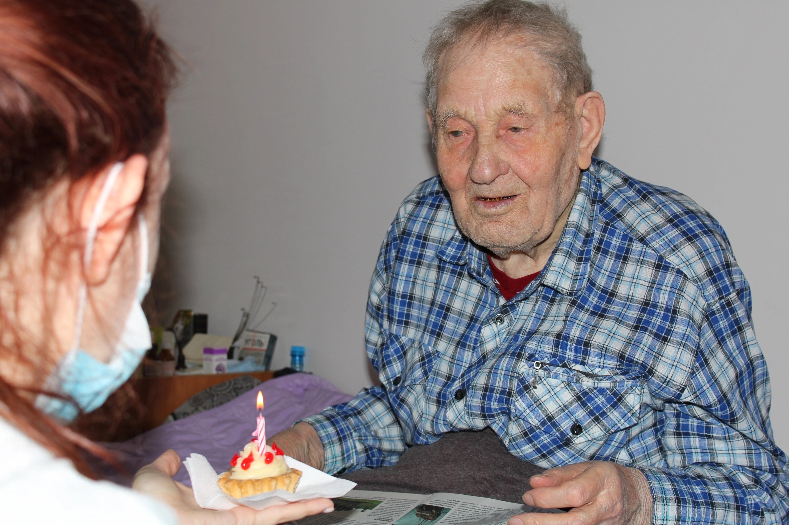

Наши отчёты
Новогодние чудеса бывают!
Когда происходит сбор адресных просьб на подарки от подопечных, мы всегда переживаем, потому что процесс это непредсказуемый, а разочаровать никого не хочется. Итак, читаем список от Целинного домика. и написано черным по белому "печатная машинка". Упс, раритет практически.
Я сама из детства помню, как родители на своей машине печатали диссертации, а потом лезвием для бритья вырезали и вклеивали буквы на места опечаток. Кропотливая работа должна я вам сказать. Но, благодаря этим машинкам в том числе, стали родители стали кандидатами наук))
Так вот, мы всполошились, потому что дедушка Валера, попросивший ее, последнее время был молчалив и полон грусти. Точно надо что-то делать. Почему машинка? Поясняем: долгое время он работал в редакции районной газеты Кытмановского района. Работу любил и коллеги его уважали. Да и собеседник он, надо отметить, очень интересный!
Ну, делать нечего, кинули клич. И тишина. Начали мониторить авито. Цена - космос((( И вдруг, пишет нам замечательная девушка Екатерина Присекина
А знаете почему д. Валера грустный был? Правильно, машинки пишущей у него не было! А теперь есть! И радостно так, только посмотрите на фото! Катя не только машинку передала, но и открытку, в которой оставила свой телефон и ленту для техники будет передавать!
Счастье в таких мелочах живет, в таких простых вещах, что иногда просто диву даешься!

Немного из адресной помощи.
В прошлое воскресенье мы поехали к «надомникам», в списке семь человек, но очно знакомы только с одним дедушкой, с остальными даже по телефону не разговаривали, но соцслужба предупредила людей, что мы заедем
Итак, первый адрес и сразу неприятный сюрприз, бабушка маломобильная, двери не сможет открыть, попросила вернуться через пару часов, не проблема, обязательно вернемся.
Едем дальше, второй человек, тоже маломобильный, но по счастливой случайности для нас, маму пришёл навестить сын, разговор недолгий, отнеслись настороженно, да и тут наша помощь не нужна, оставляем продукты и едем дальше. Для себя делаем заметку, что сюда возвращаться не нужно и это радует).
Третий адрес и полное разочарование: бабушка категорически отказывается в помощи, но в этом плюс тоже есть, в продуктах она не нуждается.
Четвёртый и пятый адрес как братья-близнецы, дома ни кого нет, даже с соседями поговорить не удалось...
Шестой адрес интересен тем, что за бабушку попросили серебряные волонтёры, кратко информация такова: бабушка активно участвует в мероприятиях, всегда старается быть позитивной и никогда не просит помощи, но со средствами тяжело и старается экономить каждую копейку, но не голодает. Бабушки дома не оказалось, но нас встретил её супруг, строгий дедушка!!! Расспросил основательно, кто такие, зачем и почему!!! Если человек служил в органах, то должен был быть хорошим оперативником)
Возвращаемся на первый адрес. Дверь открыла крепенькая женщина пожилого возраста,она ухаживает за лежачей бабушкой. Из дальнейшей беседы понимаем, что это соцработник и она много лет уже ухаживает за подопечной. Бабушка нам понравилась, открыта и неозлобоенна, левая рука и нога практически не работают(. Поведала о смерти сына, о том как она пыталась ногой дотянуться до сына, о том, что не верила в самое страшное для матери. Слушаем о том, что сын был её надеждой, о том что невестка с внуками живёт в Германии, и сейчас не могут прилететь.... Рассказала, что буквально на днях первый раз за три года была на улице, и если бы не зубы, то неизвестно когда бы удалось подышать свежим воздухом. Даём себе зарок, что надо проработать возможность прогулок, но тут такой момент: четвёртый этаж и отсутствие лифта.....
На седьмой адрес мы уже едем в компании куратора программы «именинник месяца» - Аня Павляшик и Волонтеры-медики Натальей. Задача: проверить зрение у дедушки, нужно понять есть ли возможность вернуть возмодность видеть. После осмотра прогноз хороший, Наталья расписала, что необходимо делать и в какой последовательности! С дедушкой у нас связаны большие планы, но обо всём по порядку и в своё время)))) Единственное, можем сказать, что это будет совместный амбициозный проект с одним из федерального значения благотворительным фондом!!!
За возможность передать продукты искренне благодарим Нина Данилова и желаем ей скорейшего выздоровления!!!!
P. S. Первые две фотографии, это один и тот же человек)
 

Поздравления с Днем рождения
"Деточка, ты чего??? День рождения у меня уже 3 месяца назад был. Скоро уж новое, коли доживу!" Мы широко улыбаемся и говорим, что карантин же был и мы приехать из-за него не могли.
Все реагируют на свечку и пирожное по-разному: кто-то смущается, кто-то задуть с первого раза не может (чаще всего, это маломобильные), кто-то радостно сразу улыбается, а кто-то бурчит, но свечу всё равно дует и желание загадывает.
83 человека - это правда много. Горло саднит от песен и криков "ура", но когда начинают светиться глаза пожилых людей, ты забываешь о себе.
Идя по отделению милосердия, слышим тихий голос из комнаты маломобильных проживающих: "А платочек можно?" Поначалу не очень понимаем о каком платочке речь идет, но быстро ориентируемся и заходим в гости к двух замечательным бабушкам. Поём песню "Синий платочек", потом "Надежду". Девочки-волонтеры смахивают слезы.
А бабушки начинают рассказывать нам о себе, о жизни свой тяжелой, послевоенной. Обе 1937 года рождения, были совсем маленькими когда началась война. Сейчас обе после инсульта. Одна из них похоронила всю свою семью, ко второй бабушке приходит сын и его семья, и это горомная радость!
Напоследок слышим наказ: "Берегите себя, девки! Я вот не берегла, давление 250, а продолжала плевать на здоровье. Сейчас лежу, страшно это"
Сердечно благодарим любимого куратора этой акции в Барнаульском интернате, Аню Павляшик
За невероятные по атмосфере фото благодарим Наталью Петрову. Фото по ссылке: Посмотреть Альбом Обязательно посмотрите, они очень честные и такие искренние!
Алину Шадрина за пирожные (целых 40 штук!!!) и самоотверженность в поздравлении!
Волонтеров Александру Федосову , Алину Губареву, Данила Каргополова и Анастасию Домашову за ваши добрые сердца и участие в жизни ба и де! Ребята еще записали истории ветерана и тружеников тыла!
Всех, кто помог финансово на приобретение пирожных, свечей. Мы смогли подарить, благодаря участию каждого, настоящую рабость!
 


Судьбы
Когда мы готовили адресные истории для участия в акции Ленты и Дари еду, читали истории и других городов. Поражаешься силы духа и стойкости и начинаешь сравнивать человека нашего времени и людей, живших во времена войны, и сравнение не в нашу пользу…
Каждая история - в самое сердце. Хочется каждому из них пожелать крепкого здоровья. И пусть, как любят говорить наши бабушки и дедушки "небо будет мирным".
Надежда Сергеевна,85лет, дети войны, г. Новосибирск: «В семье было 5 детей, мама умерла при рождении брата. Отца в первый день войны забрали на фронт, убили его в первый месяц на фронте. В 6 лет стали бегать в поля, собирали мороженую картошку и в лес за берестой,это были обязанности младших. Ходили голые и босые. Потом нас забрали в детский дом, стало полегче, давали пайку хлеба и 4 картошки на целый день. Всегда хотелось сладкого, бегали на дорогу к обозам чтобы подобрать упавший жмых- это корм для животных.»
Людмила Андреевна, 89 лет, дети войны, г Новосибирск: «Нас в семье было 6 детей, все во время войны умерли от голода и болезни, осталась только я. Отца забрали на фронт, он пропал без вести. Помню, как ходили поздней осенью в поля искать картошку, пока ищешь все руки отморозишь, а летом из травы лепёшки пекли. Тяжёлое было время, каждый день приносили похоронки, а мы дети понимали всё и старались помочь взрослым, чтобы война поскорей закончилась.»

Нина Васильевна, 89 лет, блокадница, г. Омск: «Родилась я в Ленинграде, когда началась война, мне было 6 лет, мою семью эвакуировали во время войны, а мать умерла, оставив меня и сестру одних. "Мама отдавала нам свой паек. Она умерла уже в эвакуации: организм был истощен. Умерла, чтобы мы выжили."»